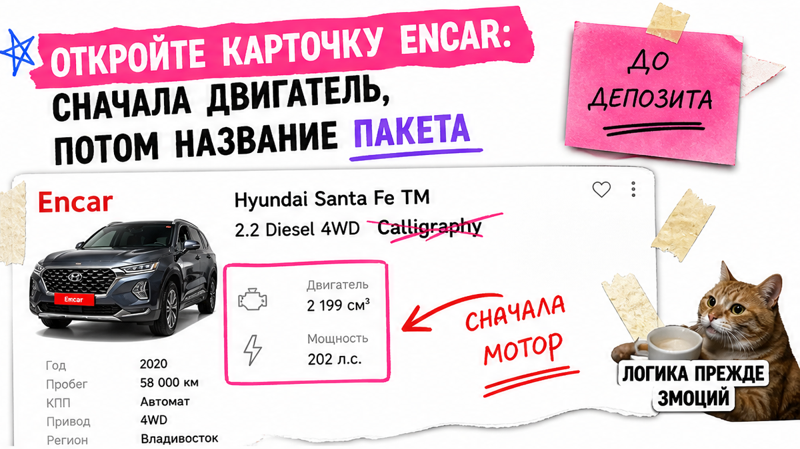
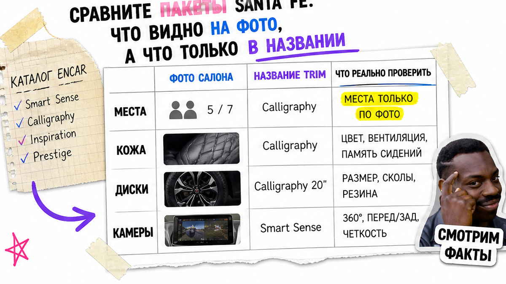
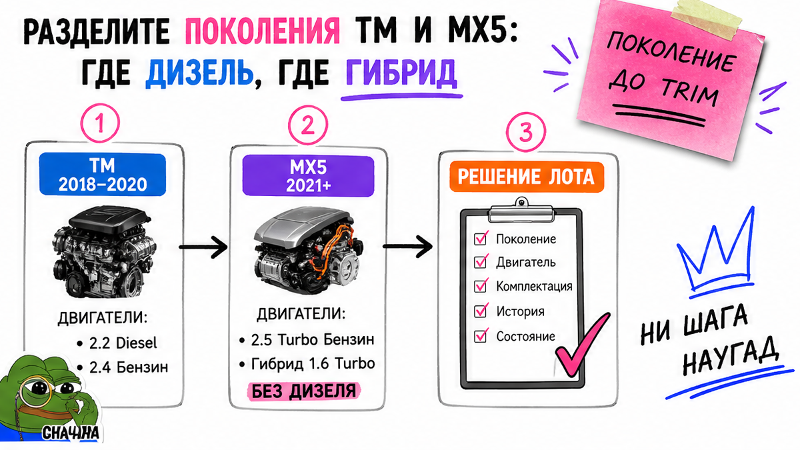

Папа семьи открывает Encar, видит "싼타페 Calligraphy" и думает: топовая надпись – значит правильная машина. Потом депозит, а уже после брони выясняется: объём около 2497 см³, для вывоза в РФ нужна лицензия, а "семь мест" на фото салона нет. Проблема знакомая: деньги зависли, а лот ещё не проверен. Как выбрать комплектацию Hyundai Santa Fe из Кореи в 2026: сначала три цифры (см³, л.с., места), потом имя пакета – и решение "беру / не беру" до перевода денег.
Коротко по сути: На Encar имя Exclusive / Prestige / Calligraphy – про кожу и диски, а для покупателя из РФ критичнее объём двигателя. Машины от 2000 см³ в РФ/Беларусь по практике 2026 требуют разрешения на вывоз. На новом MX5 нет дизеля: только 2.5 Turbo или гибрид 1.6. До депозита выпишите поколение, мотор, trim, места, привод и сверьте VIN с фото. Результат – понятный чеклист по одному лоту без угадывания.
Это не Tucson, не K5, не Seltos и не Sportage – речь про семейный mid-size Hyundai Santa Fe на 5–7 мест с корейского Encar. Мы в Авто-Сейлс во Владивостоке видим одну ошибку: влюбляются в красивое слово в заголовке и забывают блок двигателя. Избегайте этой ловушки: красивое имя не спасает, если см³ и места не сходятся.
Сюрприз 2026: экспортный контроль в Корее уже наказывает за вывоз авто от 2000 см³ в РФ без разрешения. Красивый Calligraphy это не отменяет. Ниже – порядок чтения карточки и чеклист до депозита, без статичных "цен под ключ". Сделайте по одному лоту – получите решение "интересен / мимо" ещё до оплаты.

На практике новичок читает объявление как рекламу сверху вниз. Правильный порядок другой: сначала топливо и объём, потом мощность, потом trim, места и привод. Имя пакета – в конце, как украшение. Используйте этот порядок, даже если заголовок кричит Calligraphy.
Порядок чтения карточки:
Ссылка на лот → Поколение TM/MX5 → Топливо и см³ → Мощность → Trim → Места и привод → Фото салона → VIN/история → Решение по депозиту
Сделайте: без выписанных см³ и л.с. депозит себе запрещать. Не делайте: бронировать "потому что Calligraphy" – слово не говорит, вывезут ли лот и сколько мест реально в салоне.

По прайс-листам Hyundai Korea 2026 линейка идёт примерно так: Exclusive и Prestige → H-Pick → Calligraphy и Black Ink. На пальцах: Exclusive – проще "топа", Prestige – средний комфорт, Calligraphy – верхняя отделка (часто 21" на бензине, Nappa, "цифровое" зеркало). H-Pick и Black Ink – спецпакеты, не отдельный мотор.
| Что смотреть | На что влияет | Типичная ошибка |
|---|---|---|
| Имя trim | Кожа/Nappa, диски, зеркало, аудио, опции | Путать trim с двигателем |
| Объём см³ | Экспортный фильтр и смета под заказ | Смотреть только на "2.5" в заголовке |
| Число мест | Семья 5 / 6 / 7 | Верить "7 мест" без третьего ряда на фото |
| HTRAC / 4WD | Полный привод (HTRAC – 4WD Hyundai) | Думать, что Calligraphy всегда полный привод |
Например, в заголовках Encar встречаются Exclusive, Prestige, Prestige Plus, Calligraphy, H Pick плюс 2.5T или HEV 1.6. Сверяйте диски, салон, люк, зеркало, третий ряд. Если в тексте "семь мест", а на фото два ряда – это маркетинг, не комплектация.
Сделайте: платить за то, что видно на фото и в спецификации. Не делайте: доплачивать за красивое имя без списка опций – это дорого и бессмысленно.

TM – предыдущее поколение, на вторичке Кореи лотов ещё много. MX5 – актуальный кузов. Путаница дорогая: человек ищет "новый дизель", а на MX5 дизеля нет.
Типичная ошибка: забронировать "MX5 diesel Exclusive", которого нет, и потерять время на отмену. Семья теряет дни на хаос с отменой. Нужен дизель – смотрите TM. Нужен новый кузов – сразу 2.5T или 1.6 HEV.
Сделайте: в чеклисте первой строкой писать поколение. Не делайте: просить "свежий MX5 на дизеле" – такого пакета нет.
Тут важный момент для РФ. По открытым сообщениям (в том числе судебным сюжетам 2026) вывоз легковушек от 2000 см³ в Россию и Беларусь требует экспортного разрешения. Правило покупателя: объём ≥ 2000 см³ – сначала вопрос про лицензию, потом деньги.
Честно говоря, "проще по объёму" ≠ "дешевле под ключ". У Santa Fe мощность часто выше порога коммерческого утильсбора. Готовых сумм в статье нет: расчёт до Владивостока – только в смете.
Сделайте: до брони спросить: "этот объём вывозят в РФ, какая лицензия". Не делайте: переводить депозит "пока лот не ушёл", не закрыв вывоз – потом долго разруливать.
Нужна смета по лоту – откройте каталог Авто-Сейлс: живой расчёт, без форм на этой странице.
Идеальный trim не спасает от "кота в мешке". До депозита запросите полный VIN и отчёт вроде Trust Encar / страховой истории. Сверьте пробег, владельцев, ДТП, аренду или лизинг.
В реальном проекте подбора семья теряла дни из-за "семи мест" в тексте при пятиместном салоне на фото. Нет совпадения фото и описания – нет депозита.
Сделайте: соберите пакет VIN + история + фото до оплаты. Не делайте: принимать скрин "всё чисто" без VIN в кадре. Проверьте совпадение глазами.
Критерий результата: если все пункты закрыты – лот понятен, вы сможете сказать "беру" или "мимо". Если хоть один пустой – рано. Ориентир – заполненный чеклист, не эмоция от trim.
Критерий "готово": заполненный чек-лист по одному лоту и решение "беру / не беру" до депозита. Не "почти Calligraphy", а цифры и документы.
Сделайте: идти сверху вниз и ставить галочки. Не делайте: бронировать на эмоциях, пока смета и вывоз не ясны.
Нужна помощь с подбором – напишите в Telegram avtosales125 или продолжите в каталоге. Форм на странице нет: детали заказа – в переписке и каталоге.
Материал проверен: Редакция Авто-Сейлс – эксперты по авто под заказ из Японии, Кореи и Китая.
Достоверность: факты сверены с Hyundai Korea (прайс/каталог Santa Fe 2026), карточками Encar, сообщениями Yonhap/Reuters об экспортном контроле и практикой заказов через Владивосток на 2026-10-20; актуальные расчёты – в каталоге.
Смотрите не ярлык, а список: диски, кожа/Nappa, зеркало, аудио, пакет мест. Calligraphy – верхняя отделка, Exclusive ближе к более простой версии. Мотор и объём читайте отдельно. Сверяйте опции с фото до депозита.
Сначала смотрите объём. Версии от 2000 см³ (2.5 Turbo, дизель 2.2) требуют ясного плана лицензии на вывоз в РФ. Гибрид 1.6 (около 1598 см³) по фильтру объёма обычно проще, но мощность и утиль считайте в смете. На MX5 дизеля нет.
Поколение TM/MX5, см³ и л.с., trim, число мест на фото, привод, VIN, страховую историю, аренду/лизинг, совпадение цвета и салона с текстом. Пробег – один пункт списка, не главный.
Нет. На MX5 в актуальной линейке – 2.5 Turbo или гибрид 1.6. Дизель 2.2 ищите на TM и отдельно проверяйте вывоз. Не бронируйте "несуществующий" MX5 diesel.
Смета зависит от лота, курса, логистики и утиля на дату заказа. Статичная цифра в блоге устаревает. Берите расчёт по конкретной карточке в каталоге.
Откройте один лот Santa Fe и заполните чек-лист: поколение → двигатель → объём → trim → места → привод → VIN. Уже сегодня получите решение "интересен / мимо" без депозита. Дальше – смета и подборщик.
Santa Fe – более крупный семейный кроссовер на 5–7 мест, другие моторы и пакеты. Tucson, K5, Seltos и Sportage – отдельные модели и статьи. Не переносите их комплектации один в один.